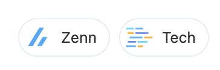

Zennの2種類の執筆方法について

いいね

ツイート

このページではZennで記事や本を作成するときの執筆環境について紹介します。
Zenn の執筆方法は 2 種類
1. Webエディター
ブラウザ上で動くエディターです。Zennにログインした状態で使用します。
2. ローカルのテキストエディター + CLI
自分の好きな環境で執筆したい方はGitHub リポジトリとの連携機能を利用することをおすすめします。リポジトリ連携をすると、特定のブランチに変更があったときに自動でコンテンツがzenn.devに反映されるようになります。
📘 Zenn と GitHub リポジトリを連携する →